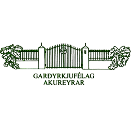
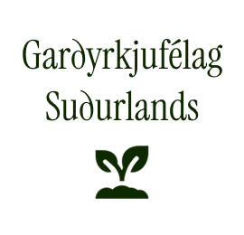

Garðyrkjufélag Akureyrar var endurreist árið 2008 sem Eyjafjarðardeild Garðyrkjufélags Ísland.

Garðyrkjufélag Akureyrar var endurreist árið 2008 sem Eyjafjarðardeild Garðyrkjufélags Ísland.

Verkalýðsfélag Suðurlands var stofnað 1. desember 2001. Félagsvæði þess nær frá Þjórsá í vestri að Lómagnúpi í austri.